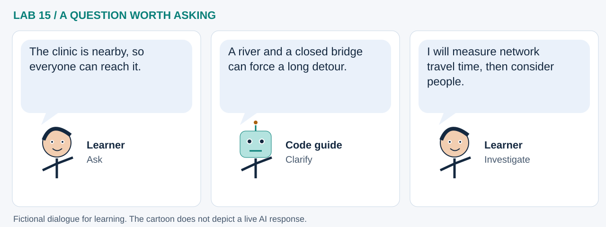

LAB 15 · 32-SECOND VISUAL WALKTHROUGH
A bridge changes the reachable world
How does one closure change access to a destination?
Silent, captioned storyboard. Use the player to pause, seek or change playback speed. On a small screen, use fullscreen or read the transcript below. The diagrams explain the method; they are not recordings of a live model run.
Download MP4 · Captions · Open infographic at full size

What runs here?
Network construction, shortest paths, coverage and tool replay run in Pyodide. Live model calls use the optional external runner.
Graph analysis plus optional bounded model tools; shortest paths are computed by an explicit algorithm.
Transcript and code landmarks
- 00–08s · Connect
Represent travel possibilities as nodes, edges and minute costs.
edges.append((a, b, 2.0)) - 08–16s · Reroute
Remove one bridge and recompute routes to the same destination.
shortest_times(closed=True) - 16–24s · Compare
Show who gains travel time and how a threshold changes covered-node counts.
routes['delay'] - 24–32s · Test
Vary speed assumptions before asking an optional model to interpret computed evidence.
routes[column] * 1.2
The common misconception

Read the cartoon dialogue
- The clinic is nearby, so everyone can reach it.
- A river and a closed bridge can force a long detour.
- I will measure network travel time, then consider people.
Try explaining it
Does 80% node coverage mean 80% population coverage?
Check your reasoning
No. Node coverage treats nodes equally. Population coverage needs validated population allocation and a defined denominator.
Original educational illustrations and captions authored for this repository. See the notebook for data and software citations.